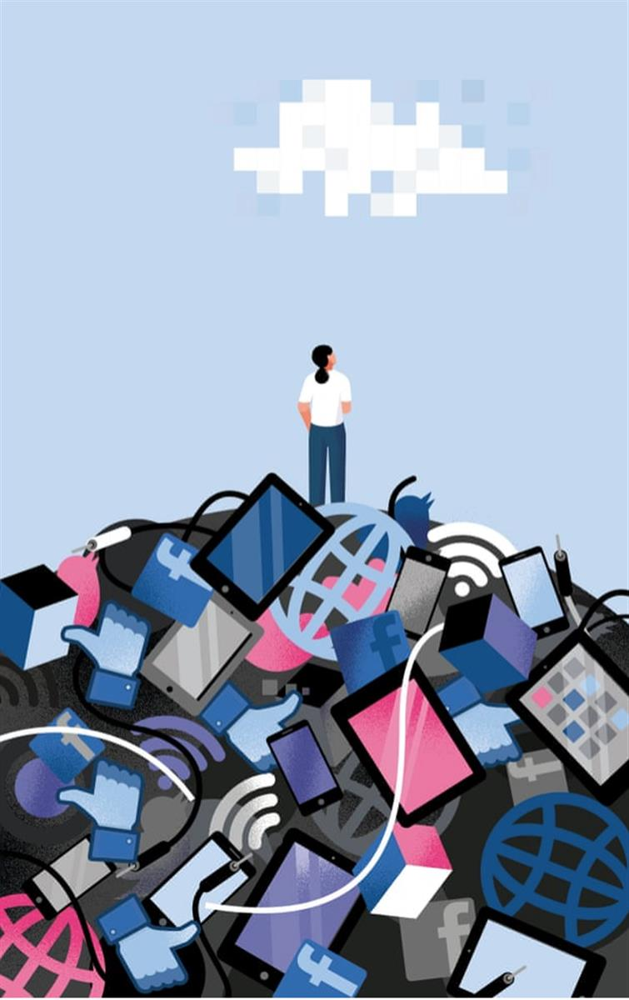
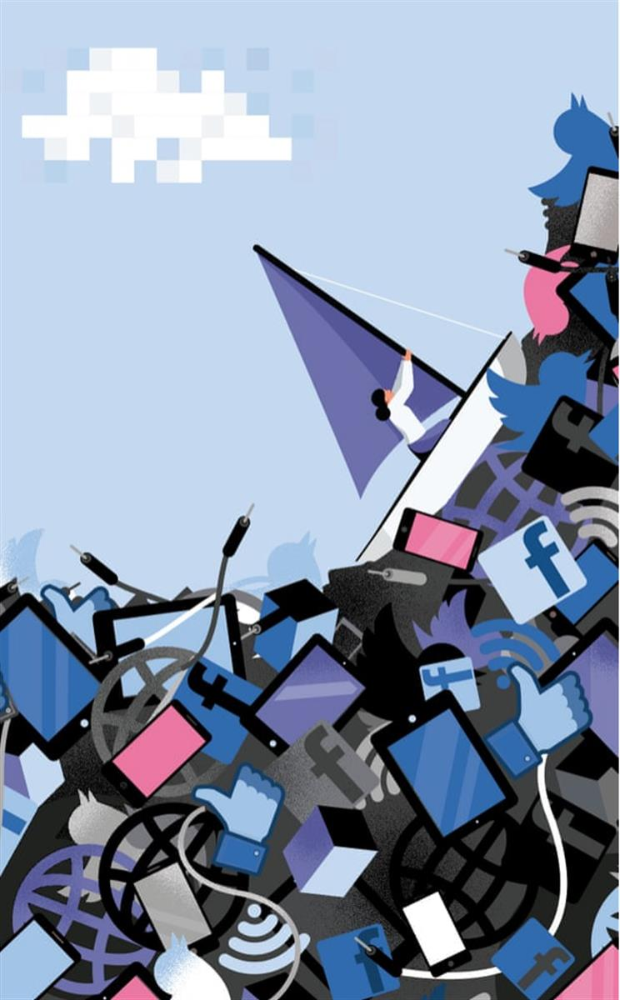

Yawning gap: days of nothing are a ‘soon-to-be lost plane of human experience’. Illustration: Nathalie Lees
People born in the late 1970s are the last to have grown up without the internet. Social scientists call them the Last of the Innocents. Leah McLaren ponders a time when our attention was allowed to wander
Sun 4 Aug 2019 08.00 BST
In moments of digital anxiety I find myself thinking of my father’s desk. Dad was a travelling furniture salesman in the 1980s, a job that served him well in the years before globalisation hobbled the Canadian manufacturing sector. He was out on the road a lot, but when he worked from home he sat in his office, a small windowless study dominated by a large teak desk. There wasn’t much on it – synthetic upholstery swatches, a mug of pens, a lamp, a phone, an ashtray. And yet every day Dad spent hours there, making notes, smoking Craven “A”s, drinking coffee and yakking affably to small-town retailers about shipments of sectional sofas and dinette sets. This is what I find so amazing. That my father – like most other professionals of his generation and generations before him – was able to earn a salary and support our family with little more than a phone and a stack of papers. Just thinking of his desk, the emptiness of it, induces in me a strange disorientation and loneliness. How did he sit there all day, I wonder, without the internet to keep him company?
In this age of uncertainty, predictions have lost value, but here’s an irrefutable one: quite soon, no person on earth will remember what the world was like before the internet. There will be records, of course (stored in the intangibly limitless archive of the cloud), but the actual lived experience of what it was like to think and feel and be human before the emergence of big data will be gone. When that happens, what will be lost?
Earlier this year I travelled to Wilmslow, a suburb of greater Manchester, to interview Elizabeth Denham, the UK’s Information Commissioner and arguably the most empowered data regulator on the planet. Our discussion was wide-ranging, but among the ICO’s projects she was most enthusiastic about was the Age Appropriate Design Code, or Kids’ Code for short, currently in public consultation. An extrapolation of last year’s Data Protection Act, the new code was devised over several months by a tech child welfare dream team composed of the filmmaker Baroness Beeban Kidron, children’s commissioner Anne Longfield and then minister for digital and creative industries Margot James.
The code, which is expected to be laid before parliament this autumn, would completely revolutionise the digital landscape for British children. Among its standards are strict content and design limitations on apps, games and platforms that target minors.
We are the last of a dying breed who knew days of nothing
Widely used technologies that nudge or manipulate children through algorithms or intermittent reward systems designed to get and keep their attention would be scrutinised and banned. Instead, the onus would be on tech companies to prove “the best interests of a child as the primary consideration” in any product or platform targeted at the youth market.
When I mentioned to Denham that I grew up entirely without the internet – having sent my first email on the first day of first year university in 1994 – her eyes brightened. “Ah ha!” she said. “So you’re one of the Last of the Innocents.”
What she meant by this is that my population cohort – roughly speaking those born in the mid-to-late 1970s – are the last generation of humans on the planet to have grown up prior to the popularisation of digital culture. Another name for us, coined by the Vancouver writer Michael Harris in his book The End of Absence, is “digital immigrants,” which he defines as those who have lived both “with and without the crowded connectivity of online life.”
Denham’s Kids’ Code is an audacious act – a radical new set of rules that would reimagine the internet as a garden of creativity and knowledge for children, rather than the chaotic circus of unregulated content and dubious corporate interests that characterise its current state. The optimism and daring ambition of her project suggests a question I didn’t think to ask until I was already on the train back from Wilmslow: is it possible to regain innocence lost?
For weeks after meeting Denham, I found myself haunted by the notion of digital immigration and what it means for my generation. I’d always assumed that not being connected as a child had been a handicap – surely it explained why I’m hopeless at figuring out the smart TV remote or programming the digital thermostat. Like most kids I spent idle summer days drifting around our garden spying faces in the clouds, but my childhood (like most kids in the 80s) was also awash in cultural drek. I had way more weekly screen time than my own kids, most of it spent zoning out on bad sitcom reruns and mind-numbing hours playing Pac-Man on our Commodore 64 so our mum – a housewife with no domestic help – could get the next meal on the table. Surely bingeing on the brilliance of Pixar films and the architectural complexities of Minecraft today is a superior way for a child to spend a rainy afternoon?

Dividing line: ‘digital immigrants’ have lived both ‘with and without online life’. Illustration: Nathalie Lees
I began to investigate what it was that marked my generation out – what was the “innocence” lost, if any? I was surprised then to discover many of the neuroscientists, cyber-psychologists and tech ethicists who spend their lives pondering the cultural and moral ramifications of the digital revolution have come to believe that there is something special in my generation, and the recollection of our shared analogue past.
It’s not that digital immigrants are smarter or more talented than the digital natives that came after us. Our uniqueness, it seems, lies in the fact that we are the last of a dying breed and as such, living, breathing receptacles of a soon-to-be lost plane of human experience: empty yawning hours and days of nothing much at all.
“Which would you rather be, extremely poor with loads of friends or super rich with no friends at all?” This hypothetical question was put to me recently out of nowhere by my 11-year-old stepson. For me the answer was easy. “Poor with friends,” I said. “In the long run, loneliness would be worse than poverty.”
My stepson disagreed. “Defo rich with no friends. I’d just stay in my mansion and play Fortnite and watch YouTube and hang out with people online.”
He’s a popular kid and part of a close-knit group of boys who’ve been friends since starting school. When offered a choice of whether they’d like to watch a movie together or spend two hours playing Fortnite and interfacing remotely on headsets, the lads didn’t miss a beat in choosing the latter. This is because, for digital natives like my stepson and his mates, socialising online is the same as – at times even preferable to – socialising in person.
For his 11th birthday he got his first smart phone and it was as if we’d handed him the keys to a magic portal to an idealised parallel universe. I suppose in a way we had. Just as puberty begins to set in, we’d given him a comfort innocents like me and my husband had never known as alienated adolescents: the feeling of being with friends all the time. The absence of aloneness.
For years, scientific debate has raged over whether or not sustained internet use has a deleterious effect on human brain function – particularly on the developing brains of children. The never-ending “screentime debate” has, historically, been heavy on conjecture and light on hard data. But this spring the results of a sweeping international study were published in World Psychiatry, a respected international journal, which may have tipped the balance in favour of digital sceptics. An international team of researchers working with large sample groups in two separate methodologies (MRI brain imaging and behavioural observation), consistently found compelling evidence that prolonged internet use produces both “acute and sustained alterations in specific areas of cognition,” which may reflect long-term changes in the brain, affecting attention span, memory and social interactions.
It was in those lost hours that we really got to know ourselves
Dr Joseph Firth, the Manchester-born neuroscientist who led the study told me that while the human brain does seem to interpret online socialising and connection in much the same way as the in-person variety (great news for friendless super-rich shut-ins), other cognitive functions are shown to be weakened. For instance, he said, the brain adapts fairly quickly to treating the internet as a kind of outsourced memory bank, which results over time in the reduction of our own “transactive memory function,” ie the mental sorting processes the brain performs in order to locate and grasp a fact or mental image.
“The problem with the internet,” Firth explained, “is that our brains seem to quickly figure out it’s there – and outsource.” This would be fine if we could rely on the internet for information the same way we rely on, say, the British Library. But what happens when we subconsciously outsource a complex cognitive function to an unreliable online world manipulated by capitalist interests and agents of distortion? “What happens to children born in a world where transactive memory is no longer as widely exercised as a cognitive function?” he asked.
James Williams, a former Google strategist-turned Oxford-trained philosopher and digital ethicist is convinced the loss of solitude we are now experiencing is more than just an end of innocence. His book, Stand Out of our Light, outlines the moral danger of the current “attention economy” in which capitalist interests vie constantly to distract us for their own enrichment. Williams told me that unless we find better ways to regulate and interact with the pernicious distractions of big tech, we risk compromising our personal and collective goals and values, even imperilling our own free will.
“If what we attend to is, in a very real sense, what we are, then what’s at stake in the battle for our attention is nothing less than our ability to determine and pursue the kinds of lives we want to live, both individually and societally,” he said. As someone who, like me, grew up in a world without the internet, Williams worries that we will continue to “conflate entertainment with leisure, resulting in fewer and fewer opportunities for reflection and introspection.”

Riding the wave: ‘no amount of legislating can give us back the absence of before’. Illustration: Nathalie Lees
By resigning ourselves to the frenetic distractions of the attention economy, digital natives like my children and yours risk losing touch with the experience of what it is to be truly alone with their thoughts. Yes, their entertainment is more sophisticated than what we grew up with (what sane person would trade the bounty of Netflix for terrestrial Friends reruns?), but it’s those empty, restless, vaguely melancholic hours, spent staring at clouds and lounging in trees, they’ll miss. Not that they’ll long for what they don’t know. But we will, the innocents, aka the ones who recall the emptiness and boredom. For it’s in those lost hours that we unwittingly got to know ourselves; our imaginations, unbridled, were free to play and laze and wander. And while it was dull and uneventful at times it’s also true that all of humanity’s wonders – including the internet itself – have arisen from this one simple source: a person, a thought, a daydream.
It’s precisely this “loss of lack” Vancouver Michael Harris explores in The End of Absence. His experiments with regaining solitude remind me of my father’s desk: go for a long walk without your phone, he recommends. Spend an afternoon writing in longhand. Read 150 pages in one sitting. Simple in theory, but strangely terrifying in practice.
Like Williams, Harris told me he doesn’t consider himself anti-technology so much as a critical observer of its effects. He points out that all human inventions, even those we consider banal or beneficial, such as cars or books, hijack our brains and disrupt our consciousness. What we risk losing to the emergence of big data is the richness of our interior lives.
“The experience of empty space allows for the growth of imagination and independent thought, the ability to form ideas without being swayed by mass opinion or bot armies,” he said. Moreover, virtual connection impedes our ability to connect and empathise. “When you are inundated with mediated social connectivity it’s increasingly difficult to devote your attention to the people you are actually with.”
More than anything, Harris worries that in future only the privileged few will be able to afford to take regular “digital detoxes” from the exhausting demands of the attention economy. As we talk, I think of my seven-year-old who, for the first time this summer, will fly with me to Ottawa then take a six-hour bus to the wilds of Northern Ontario where he will spend seven nights sleeping in a tent, canoeing and eating freeze-dried food cooked over a camp fire with 30 other kids. He won’t have electricity and plumbing, let alone the internet. I won’t disclose the fees except to say it isn’t cheap to abandon a kid in the woods these days.
The ICO’s Age Appropriate Design Code will be laid before parliament this autumn. If properly implemented and enforced, it may well make the internet a much safer, secure place for generations of British children to come. While it will, in theory, mean a vast improvement, even Denham’s reimagined internet won’t entirely reclaim our pre-digital innocence. No amount of legislating can give us back the absence of before. Which isn’t to say innocence, or some version of it, can’t be regained, through careful daily practice. Like the act of disconnecting our kids and sending them out to play in the garden. Or of sitting, just for an hour, at my father’s empty desk.
Let’s go digital
Key developments that changed the way we communicate. By Hayley Myers
1971: Email Ray Tomlinson was responsible for electronic mail as we know it, choosing the @ sign to connect the username with its destination. Today, it’s estimated there are 3.9 billion email users.
1992: Phone texting British engineer Neil Papworth sent the first SMS – ‘Merry Christmas’ – from his computer to the mobile phone of Vodafone’s Richard Jarvis. Handsets didn’t include keyboards then, so Jarvis was unable to reply.
1997: Chat rooms Talking to friends (and strangers) in chat rooms dominated the late 1990s. The rise of other internet technologies saw their popularity plummet in the following decade, taking the ubiquitous a/s/l abbreviation with it.
2004: Social media Whether a place of meaningful connection, a worrying echo chamber or both, Myspace and its successors created an era where likes, influencers and filters reign supreme – despite recent concerns over privacy and data breaches.
2005: YouTube YouTube’s first ever video, ‘Me At The Zoo’, was uploaded by the channel’s founder Jawed Karim. It’s since been viewed 73m times, paving the way for cultural moments, such as ‘Charlie Bit My Finger’, skateboarding bulldogs and Justin Bieber.
SOURCE: THE GUARDIAN